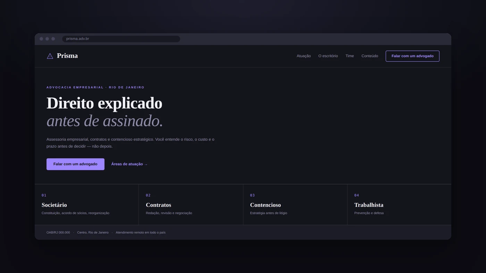
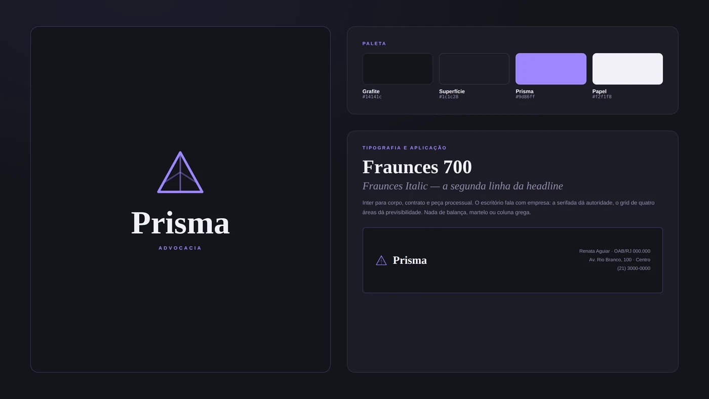

Prisma tradição sem poeira.

O BRIEFING (INVENTADO)
Um escritório de advocacia empresarial de porte médio, com clientes que são empresas e não pessoas físicas. O briefing pedia distância da estética jurídica tradicional — balança, martelo, coluna grega, tons de bordô — sem perder a autoridade que faz uma diretoria assinar contrato.
A DIREÇÃO
Grafite profundo, violeta como assinatura e estrutura de grid muito visível. Advocacia empresarial vende previsibilidade: o layout precisa parecer organizado antes de o texto dizer que é. O símbolo é um prisma em traço — refração, ângulos, a mesma luz vista de vários lados.
O SISTEMA
Identidade, paleta, sistema tipográfico, papelaria e a home com as quatro áreas de atuação em grid numerado — a estrutura que o cliente empresarial procura primeiro.
PALETA
APLICAÇÕES


AS DECISÕES
Violeta em vez de bordô
A paleta jurídica padrão é bordô, dourado e azul-marinho, e comunica tradição. O cliente aqui não compra tradição, compra agilidade. Violeta é a cor menos usada no setor e a que mais rápido separa o escritório dos vizinhos de andar.
Áreas de atuação numeradas
Societário, contratos, contencioso e trabalhista, com número monoespaçado e uma linha de escopo cada. Numerar transforma lista em índice, e índice comunica método — que é exatamente o que o comprador de serviço jurídico quer ver.
A headline promete processo, não vitória
"Direito explicado antes de assinado" fala do que o escritório controla. Prometer resultado em advocacia é, além de arriscado, vedado — e todo cliente empresarial já ouviu promessa demais.
OAB e endereço na primeira dobra
Informação obrigatória tratada como elemento de design, não como rodapé escondido. Numa categoria regulada, exibir registro cedo é sinal de conformidade — e conformidade, aqui, é argumento de venda.